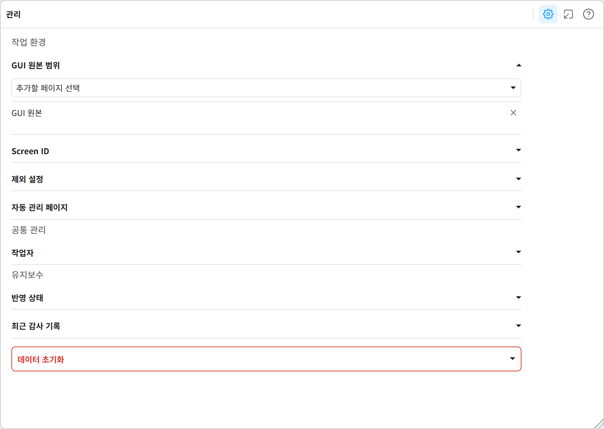
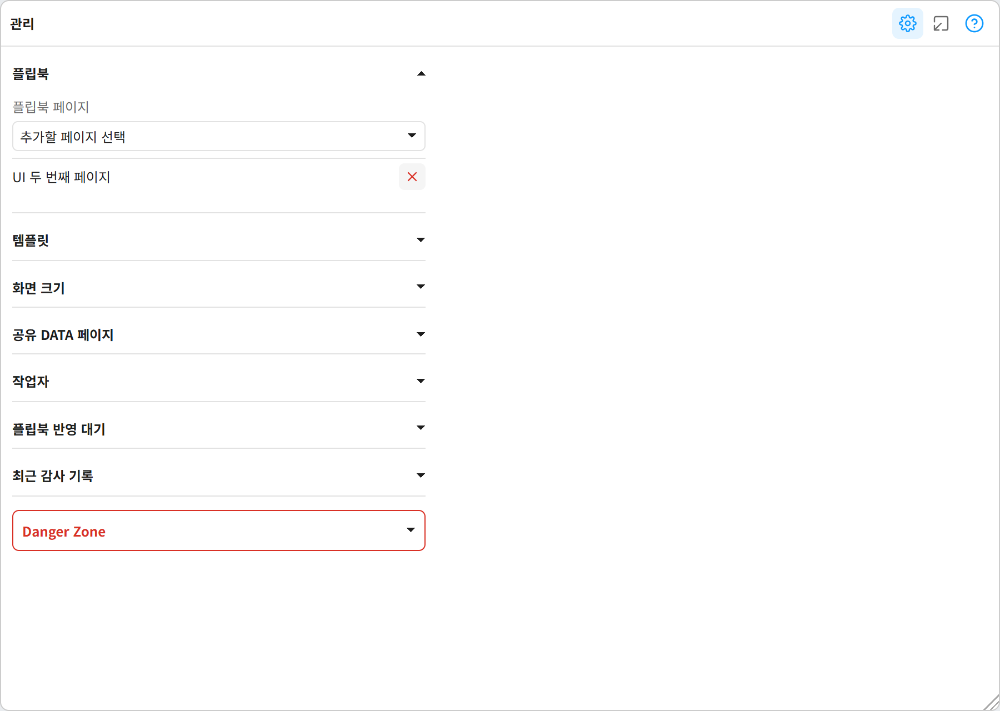
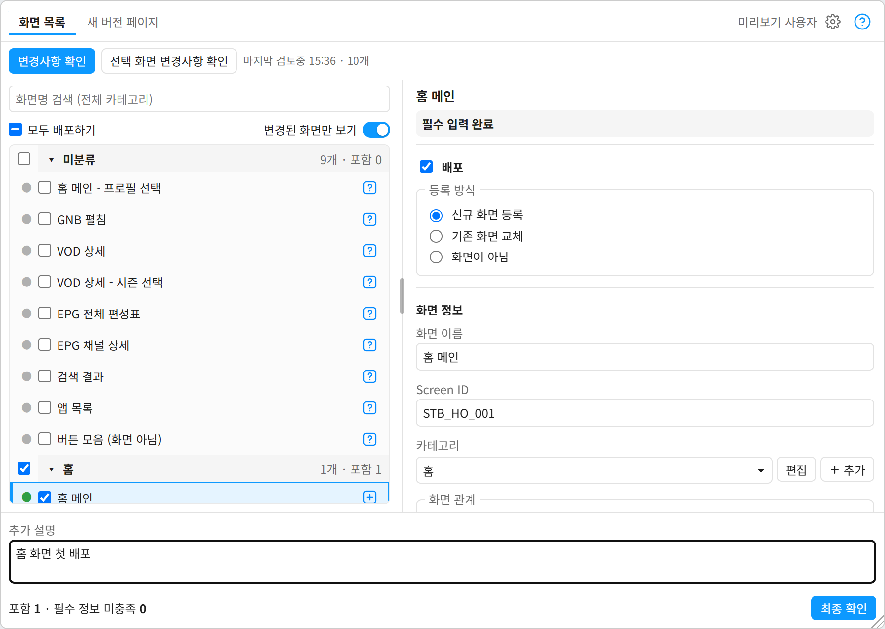
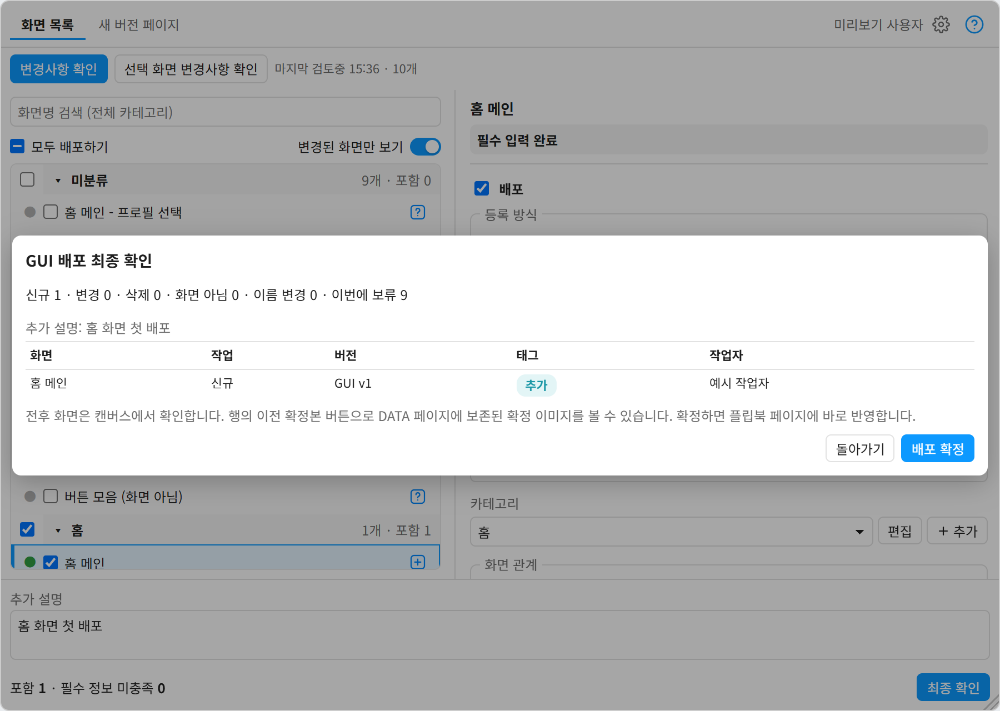
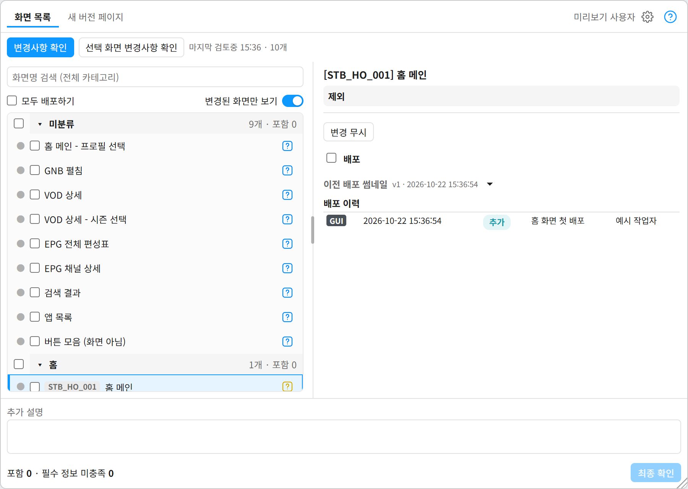
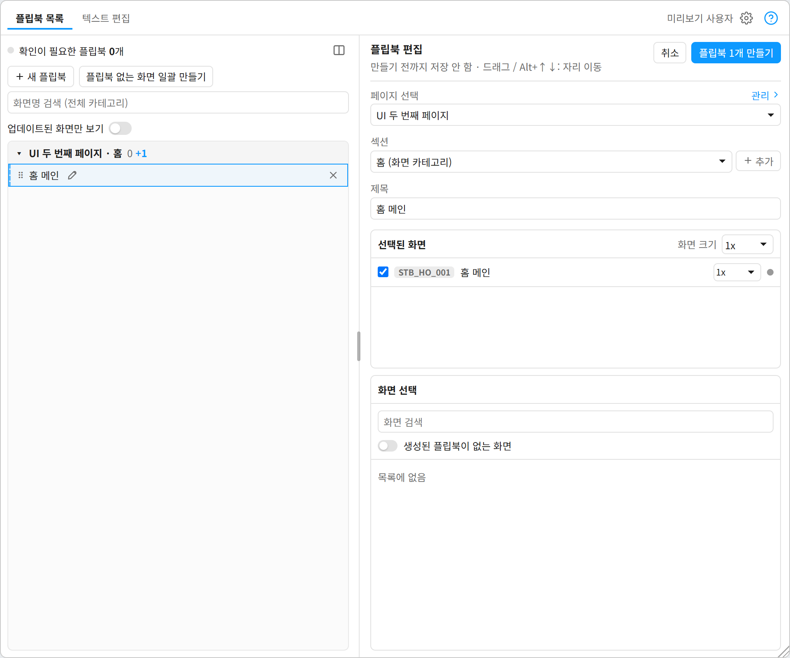
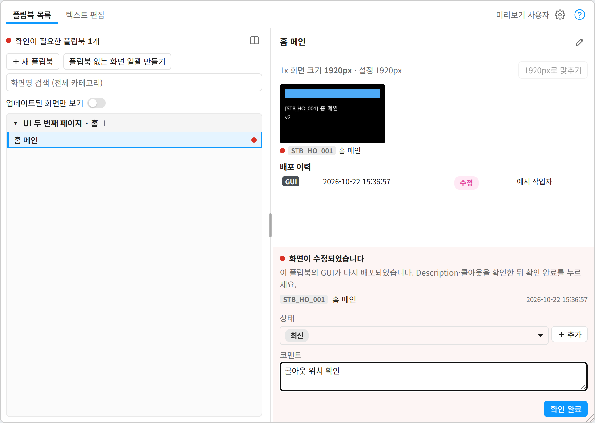
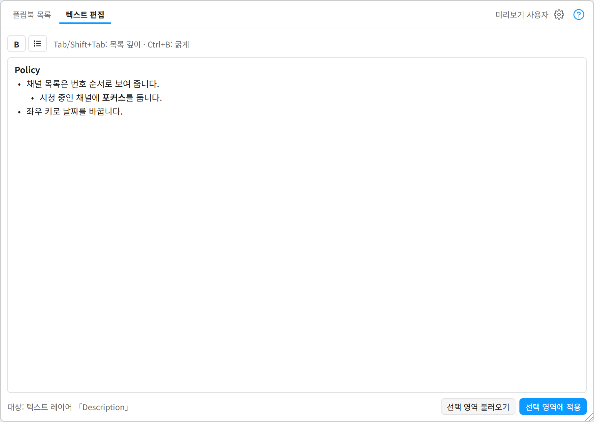
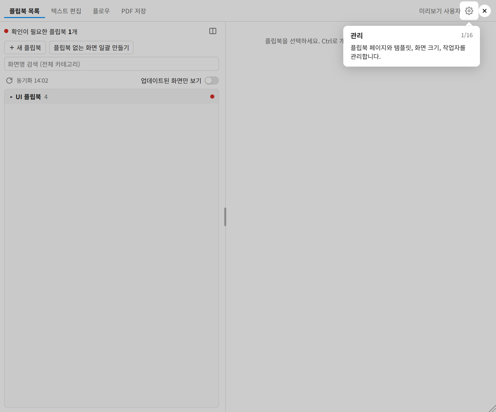

GUI·UI Publish 사용 안내
GUI팀이 확정한 화면을 UI팀의 플립북(화면설계서 페이지)에 바로 반영하고, 어떤 화면이 언제 바뀌었는지 기록으로 남기는 Figma 플러그인입니다.
이 플러그인은
GUI팀과 UI팀이 하나의 Figma 파일에서 함께 씁니다. GUI 원본 화면을 고치고 배포하면, 그 화면을 쓰는 플립북에 최신 GUI가 자동으로 들어가고 UI팀에게 수정 사실이 표시됩니다.
GUI Publish
원본 화면을 지난 배포와 비교해 바뀐 화면을 찾고, 화면 이름·Screen ID·카테고리를 정해 배포(확정)합니다.
UI Flipbook
화면을 골라 플립북을 만들고, GUI가 다시 배포된 플립북을 확인해 상태와 코멘트를 남깁니다.
전체 흐름
파란 테두리는 GUI Publish, 노란 테두리는 UI Flipbook에서 하는 일입니다.
설치와 업데이트
처음 설치
- zip 압축 풀기압축을 푼 폴더를 지우지 않을 곳(예:
문서\FigmaPlugins\GUIUIPublish)에 둡니다. Figma가 이 폴더의 파일을 직접 읽으므로 폴더를 옮기거나 지우면 플러그인이 실행되지 않습니다. - Figma에서 불러오기Figma 데스크톱 앱에서 아무 디자인 파일이나 열고, 메뉴 Plugins → Development → Import plugin from manifest…를 눌러 폴더 안의
manifest.json을 고릅니다. - 실행Plugins → Development → GUI·UI Publish에서 GUI Publish 또는 UI Flipbook을 고릅니다. Ctrl+/(Mac은 ⌘+/)로 열리는 빠른 실행 창에서 이름으로 찾아도 됩니다.
업데이트
새 버전이 나오면 아래 링크에서 최신 zip을 받아, 처음 설치한 폴더에 압축을 풀어 덮어씁니다. 다시 불러올 필요 없이 플러그인을 다시 실행하면 새 버전이 적용됩니다. 지금 버전은 이 문서 맨 위에 적혀 있습니다.
최신 버전 받기초기 세팅
설정은 Figma 파일마다 따로 저장됩니다. 파일 하나에 한 번, 담당자 한 명이 아래를 정해 두면 나머지 팀원은 바로 사용할 수 있습니다. 두 명령 모두 머리 오른쪽의 톱니바퀴 버튼 관리에서 정합니다.
GUI Publish → 관리
- GUI 원본 범위변경사항을 확인할 GUI 원본 페이지를 추가합니다. 여러 페이지를 지정할 수 있습니다. 화면 프레임은 페이지 최상위나 Section 안(중첩 Section 포함)에 있어야 찾을 수 있습니다.
- Screen ID 규칙플랫폼 Prefix와 카테고리 코드를 정합니다. 자동으로 만드는 Screen ID는
{Prefix}_{카테고리 코드}_{번호 3자리}형식입니다(예:STB_HO_001). 카테고리 코드는 카테고리를 만들 때 이름에서 두 글자로 자동 생성되며 바꿀 수 있습니다. - 작업자배포 이력에 남길 작업자 이름을 등록합니다. 배포할 때 입력란에서 바로 추가할 수도 있습니다.

UI Flipbook → 관리
- 플립북 페이지플립북을 둘 페이지를 하나 이상 추가합니다.
- 템플릿캔버스에서 템플릿 프레임을 선택한 뒤 템플릿으로 지정합니다. 템플릿이 아래 요건을 갖추지 않으면 지정할 때 빠진 항목을 알려 줍니다.
- 화면 크기플립북에 넣는 1x 화면의 가로 크기입니다(기본 1920px). 1/2x는 두 장, 1/4x는 네 장이 1x 폭에 들어가도록 이 값으로 계산합니다.

템플릿 요건
템플릿은 일반 프레임 하나이며, 안에 다음 레이어가 이 이름으로 있어야 합니다. 플러그인은 템플릿을 복제하고 안의 컴포넌트를 인스턴스로 바꿔 플립북을 만듭니다.
| 레이어 이름 | 종류 | 들어가야 하는 것 |
|---|---|---|
| UI Title | 컴포넌트 | 큰 제목 텍스트, Status 인스턴스 |
| Flipbook-Title | 컴포넌트 | input-cell-chapter·input-cell-page 안의 텍스트, input-cell-id(슬롯) |
| GUI Image Slot | 프레임 | GUI 화면 복사본이 들어갈 영역(컴포넌트가 아닌 일반 프레임) |
| Update History List | 컴포넌트 | 이력 행이 들어갈 List(슬롯) |
템플릿과 같은 페이지에 태그 컴포넌트 TagBig(상단 Status), TagSmall(이력 행), 컴포넌트 세트 Team의 Tag=System(Screen ID 태그)도 있어야 합니다.
GUI Publish 사용법
배포하기
- 변경사항 확인변경사항 확인을 눌러 원본 화면을 지난 배포와 비교합니다. 확인을 마쳐야 배포할 화면을 고를 수 있습니다. 캔버스에서 고른 화면만 비교하려면 옆의 선택 화면 변경사항 확인을 씁니다.
- 화면 목록 보기카테고리별로 화면과 상태 아이콘이 나옵니다(아래 표). 신규 화면은 원본 캔버스에서 위쪽 행부터, 같은 행에서는 왼쪽부터 표시합니다. 화면을 누르면 캔버스의 원본으로 이동하고, Shift·Ctrl로 여러 화면을 고릅니다. 검색과 필터로 변경된 화면만 볼 수 있습니다.
- 배포 켜기이번에 배포할 화면의 배포를 켜고 등록 방식을 고릅니다. 새 화면으로 등록, 기존 화면 교체(기존 화면의 새 버전으로 기록), 화면이 아님(배포 뒤 목록에서 제외) 중 하나입니다.
- 화면 정보 입력화면 이름, Screen ID, 카테고리, 독립 화면·케이스 관계를 정합니다. 카테고리를 고르면 Screen ID가 캔버스 순서대로 자동 입력되고 직접 고칠 수도 있습니다. 케이스는 기본 화면을 고르면 다음 번호가 들어갑니다. 신규 화면은 프레임 이름의 대괄호 안에 Screen ID가 있으면(예:
[STB_HO_001] 홈) 그 ID를 씁니다. - 태그·작업자, 추가 설명배포 이력에 남을 태그와 작업자를 고릅니다. 아래쪽 추가 설명은 배포 한 번에 하나이며 선택 입력입니다.
- 최종 확인 → 확정최종 확인에서 포함한 화면과 필수 정보 미충족 개수를 봅니다. 빨간 테두리로 표시된 입력을 채운 뒤, 배포 확인 요약을 보고 확정합니다.


- 화면마다 1/4 크기 썸네일이 GUI 썸네일 (자동 관리) 페이지에 남습니다.
- 그 화면을 쓰는 플립북의 GUI 영역에 원본 복사본이 바로 들어가고, 플립북에 빨간 점이 붙습니다.
- 배포 기록이 쌓이며, 배포된 화면을 고르면 배포 이력과 이전 배포 썸네일을 볼 수 있습니다.
상태 아이콘
| 상태 | 뜻 |
|---|---|
| 신규 | 아직 등록되지 않은 프레임입니다. 배포를 켜고 등록 방식을 고릅니다. |
| 변경 감지 | 지난 배포와 다릅니다. 실제로 바뀌었으면 배포하고, 아니면 변경 무시를 누릅니다. |
| 삭제 | 등록된 원본 프레임을 GUI 원본 범위에서 찾지 못했습니다. 배포를 켜고 삭제하거나 다른 화면으로 교체합니다. |
| 변경사항 없음 | 비교에서 차이를 찾지 못했습니다. 필요하면 배포에 포함할 수 있습니다. |
| 비교 전 | 아직 비교하지 않았습니다. 변경사항 확인을 누릅니다. |
| 비교 불가 | 원본을 읽거나 비교하지 못했습니다. 다시 확인합니다. |
배포를 켜면 아이콘이 추가됨·화면 교체됨·이전 버전·화면이 아님·수정됨·삭제됨으로 바뀌어 배포 뒤 결과를 미리 보여 줍니다.

다른 파일에서 GUI 페이지를 복사해 왔을 때
페이지를 통째로 복사해 오면 같은 화면도 신규로 보입니다. GUI 원본 범위가 아닌 새 페이지에 붙여 넣은 뒤, 머리의 새 버전 페이지 탭에서 그 페이지를 고르고 비교를 누릅니다. 화면 내용으로 기존 화면과 연결을 제안하며(「동일」, 「유사 n%」, 「이름 같음」), 연결을 확인한 뒤 전환을 두 번 누르면 그 페이지가 GUI 원본 범위가 됩니다. 기존 페이지는 바뀌지 않습니다.
UI Flipbook 사용법
플립북 만들기
- 새 플립북목록 위 새 플립북을 누르면 고른 플립북 바로 다음 자리에 새 플립북이 미리보기로 들어갑니다. 이미 만든 플립북도 드래그하거나 Alt+↑↓로 옮길 수 있고, 다른 Section에 놓으면 그 Section으로 옮겨집니다. 만들 때 캔버스 배치에도 반영할지 묻습니다(반영하지 않음은 원래 순서로 되돌림). 만들기를 누르기 전에는 저장되지 않습니다. 드래그하거나 Alt+↑↓로 자리를 옮기고 X로 지웁니다.
- 위치·제목오른쪽 플립북 편집에서 플립북을 놓을 페이지와 Section을 고르고, 그 아래 제목을 입력합니다. 새 Section도 추가할 수 있습니다. 목록에서는 이름을 더블클릭하거나 이름 오른쪽 연필을 눌러 그 자리에서 고칩니다. 제목을 비우면 첫 화면 이름(화면이 없으면 「새 플립북」)이 제목이 됩니다.
- 화면 고르기화면 선택에서 카테고리별로 화면을 고르고, 선택된 화면에서 화면마다(또는 한 번에) 크기를 1x·1/2x·1/4x로 정합니다. 화면을 고르지 않아도 만들 수 있습니다.
- 만들기플립북 편집 오른쪽 위 플립북 N개 만들기를 누르면 목록 순서대로 캔버스의 정한 자리에 만듭니다. 취소는 확인 후 만들기 전 새 플립북을 모두 지웁니다.

- 노란 점은 플립북이 아직 없는 화면, 회색 점은 새 플립북에서 고른 화면입니다.
- 화면을 우클릭하면 그 화면 하나로 된 새 플립북을 바로 추가합니다.
- 플립북 없는 화면 일괄 만들기는 페이지와 범위(카테고리·화면 유형·검색)를 정해, 플립북이 없는 화면마다 플립북을 하나씩 만듭니다.
GUI 수정 확인하기
- 빨간 점 찾기GUI가 다시 배포된 플립북에는 빨간 점이 붙고, 목록 맨 위에 확인이 필요한 플립북 개수가 나옵니다. 업데이트된 화면만 보기를 켜면 그 플립북만 남습니다.
- 수정된 화면 보기플립북을 고르면 위쪽에 GUI 썸네일(수정된 화면에 빨간 점)과 배포 이력이, 아래쪽에 확인 영역이 나옵니다.
- 상태·코멘트 → 확인 완료상태(기본 「최신」)와 코멘트(선택)를 남기고 확인 완료를 누르면 빨간 점이 풀립니다. 상태는 플립북의 Status에, 코멘트는 Update History List에 한 줄로 남습니다. 여러 플립북을 골라 한 번에 처리할 수 있습니다.

텍스트 편집
Description에 중첩 목록과 굵은 글씨를 넣을 때 씁니다. 머리의 텍스트 편집 탭에서 합니다. 플립북 안의 아무 레이어나 고르면 그 플립북의 Description에 굵은 제목 줄마다 제목·본문을 묶어 넣고, 플립북 밖의 텍스트 레이어 하나를 고르면 그 레이어에만 넣습니다.
- 고르기캔버스에서 플립북 안의 아무 레이어(여러 개, 플립북 전체도 가능)나 플립북 밖의 텍스트 레이어를 고릅니다. 탭 아래쪽에 대상(예: 대상: 플립북 「홈 메인」)이 표시됩니다.
- 불러오기·편집선택 영역 불러오기를 누르면 고른 레이어의 내용이 글머리표·굵은 글씨 그대로 편집기에 들어옵니다. Tab은 목록 한 단계 깊게(일반 문단은 목록으로), Shift+Tab은 얕게 합니다. Ctrl+B로 굵게 하고, 줄 처음에
-를 치면 목록이 됩니다. 여러 줄을 골라 한 번에 바꿀 수 있고 Ctrl+Z로 되돌립니다. Description의 제목(Policy, 1. 항목명, Navigation)은 글머리표 없이 줄 전체를 굵게 씁니다. 제목 아래부터 다음 제목 전까지가 그 제목의 본문이 됩니다. - 적용선택 영역에 적용을 누르면 고른 레이어의 내용이 바뀝니다. Description은 굵은 제목 줄마다 제목·본문 레이어 묶음으로 기존 내용을 교체합니다. 텍스트 레이어 하나를 골랐다면 그 레이어의 글꼴·크기·행간·색은 그대로 두고 목록·들여쓰기·굵기만 적용합니다. 굵은 글씨에는 같은 글꼴의 Bold(없으면 SemiBold 등) 스타일이 필요합니다.

- ·**로 쓴 글을 붙여 넣어도 목록·굵게로 바뀝니다.그 밖의 기능
- 크기 다시 맞추기: 관리의 화면 크기를 바꾸면 이후 반영되는 플립북부터 적용됩니다. 이미 만든 플립북은 목록에서 골라 상세 위쪽의 {설정 폭}px로 맞추기를 누릅니다.
- 연결 끊김: 캔버스에서 프레임을 찾지 못한 플립북에는 연결 끊김 아이콘이 붙습니다. 필요 없으면 목록에서 삭제로 뺍니다. 그대로 두면 GUI가 다시 배포될 때 프레임을 새로 만듭니다.
알아 둘 점
- 튜토리얼: 머리 오른쪽 끝의 파란 물음표 버튼을 누르면 실행한 명령의 주요 흐름을 단계별로(GUI Publish 14단계, UI Flipbook 15단계) 보여 줍니다. 예시 화면에서 진행하므로 실제 파일은 바뀌지 않습니다. Esc로 언제든 끝낼 수 있습니다.
- 원본 프레임 이름: 화면 이름과 Screen ID는 플러그인 기록에만 저장되며 원본 프레임 이름은 바꾸지 않습니다. 배포된 화면은 프레임 이름을 바꿔도 변경 감지로 보지 않습니다.
- 자동 관리 페이지: GUI 썸네일 (자동 관리) 페이지와 DATA 페이지는 플러그인이 관리합니다. 직접 고치지 마세요.
- 플립북 프레임 옮기기: 플립북 프레임은 플립북 페이지 안에서만 옮기세요. 다른 페이지로 옮기면 연결 끊김으로 봅니다.
- 데이터 초기화: 관리의 데이터 초기화는 이 파일의 화면 등록·배포 기록·설정을 모두 지웁니다. 캔버스는 지우지 않으며, 되돌리려면 Figma 버전 기록을 써야 합니다.
- 큰 화면: 화면이 많거나 크면 변경사항 확인과 배포에 시간이 걸릴 수 있습니다. 변경사항 확인은 진행 중에 취소할 수 있습니다.
